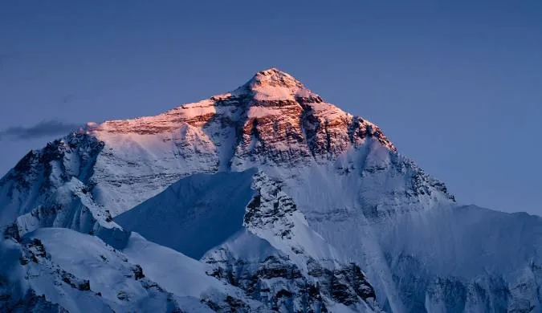
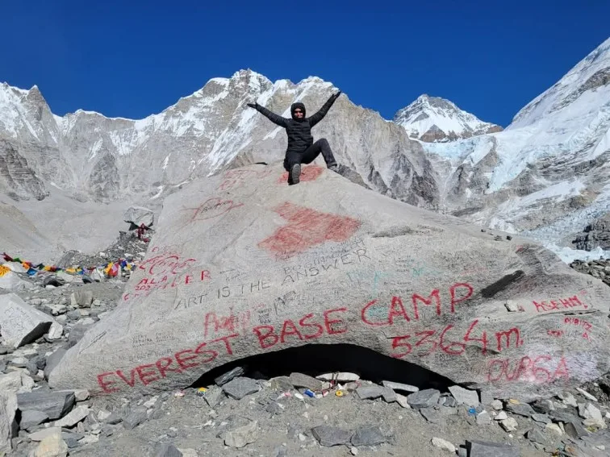
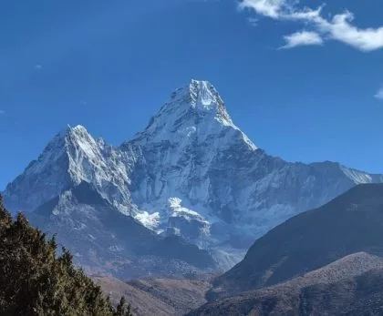

1. Executive Summary: The Crown of the World (8,848.86m / 29,031.7 ft)
Mount Everest is the highest geographic feature on planet Earth. Its summit reaches 8,848.86 meters (29,031.7 feet) above sea level—higher than any other landmass in existence.
Located at latitude 27°59'17" N and longitude 86°55'31" E, the mountain sits at the heart of the Great Himalayan Range. The international frontier between Nepal and China runs directly across the summit snowy crest:
Key Everest Geographic Specifications
- Official Agreed Elevation: 8,848.86 m (29,031.7 ft) — ratified jointly on December 8, 2020.
- Mountain Range: Mahalangur Himal, Central Himalayas.
- Parent Countries: Nepal (Province No. 1, Solukhumbu) & China (Tibet Autonomous Region, Shigatse).
- Protected Status: Sagarmatha National Park (Nepal - UNESCO World Heritage Site) & Qomolangma National Nature Reserve (China).
- Primary Neighboring 8,000m Giants: Lhotse (8,516m), Makalu (8,485m), and Cho Oyu (8,188m).
2. Geological Formation & Plate Tectonics: An Ocean Floor Raised to the Sky

One of the most extraordinary scientific paradoxes on Earth is that the top of Mount Everest was once the bottom of a tropical ocean.
Roughly 50 to 55 million years ago during the Cenozoic era, the continental landmass of India drifted rapidly northward across the prehistoric Tethys Ocean, eventually slamming into the massive Eurasian tectonic plate:
- The Tethyan Sediment Uplift: As the dense Indian tectonic plate forced its way beneath Eurasia (subduction and crustal shortening), thousands of meters of ancient ocean floor sediment, coral reefs, and limestone shells were crumpled, folded, and thrust thousands of meters into the atmosphere.
- The Qomolangma Limestone Formation: The uppermost yellow-grey rock bands that form the summit pyramid of Everest (known as the Yellow Band and Qomolangma Formation) are comprised of 450-million-year-old Ordovician marine limestone containing fossilized trilobites, conodonts, and sea crinoids!
- Continuous Growth: The Indian plate continues to push northward into Asia at a rate of roughly 5 centimeters per year. As a result, Mount Everest is pushed upward by 4 to 5 millimeters annually while shifting laterally northeast by 26 millimeters.
In 1924, geologist Noel Odell discovered fossilized limestone shells near the summit of Everest. Modern electron-microscope analysis confirmed that these are marine crinoid fragments (ancient sea lilies) deposited in an ancient shallow tropical ocean more than 450 million years ago, long before the dinosaurs existed!
3. The Two Primary Climbing Routes: South Col (Nepal) vs. North Ridge (Tibet)

Climbers seeking to stand on top of Everest choose between two primary commercial expedition routes:
| Comparison Parameter | South Col Route (Nepal) | North Ridge Route (Tibet / China) |
|---|---|---|
| Base Camp Access | 8–10 day scenic trek from Lukla (5,364m) | Direct 4WD road access right to Base Camp (5,180m) |
| Major Objective Hazard | The Khumbu Icefall: Active glacial seracs, opening crevasses | High-Altitude Wind Exposure: Bitter jet stream gales |
| Crux Technical Challenges | Lhotse Face, Yellow Band, Hillary Step (8,790m) | First Step, Second Step (Chinese aluminum ladder), Third Step |
| Emergency Helicopter Rescue | Possible up to Camp II (6,400m) in stable weather | Virtually non-existent; all descents must be on foot |
| Popularity Share | ~70% to 75% of all annual summit attempts | ~25% to 30% of annual attempts |
| Permit Royalty Cost | $11,000 USD (Increasing to $15,000 USD in 2025/2026) | $15,000 – $18,000 USD (CTMA package permit) |
4. Pioneering History: From Mallory & Irvine (1924) to Hillary & Tenzing (1953)

The human obsession with summiting Everest spans over a century of triumph, heartbreak, and heroic endurance:
- The 1924 Mystery: British mountaineers George Mallory and Andrew Irvine disappeared into the mists high on the Northeast Ridge on June 8, 1924. When asked why he wanted to climb Everest, Mallory famously uttered the immortal words: 'Because it's there.' Mallory's body was discovered in 1999 at 8,155m; whether they reached the summit before dying remains mountaineering's greatest mystery.
- May 29, 1953 (The First Summit): New Zealand beekeeper Sir Edmund Hillary and legendary Nepalese Sherpa Tenzing Norgay conquered the South Col route as part of John Hunt's British expedition. They reached the highest point on Earth at exactly 11:30 AM, spending 15 minutes taking photographs and leaving offerings before descending safely into history.
- 1975 (First Woman): Japanese mountaineer Junko Tabei became the first woman to reach the summit on May 16, 1975.
- 1978 (Without Oxygen): Reinhold Messner (Italy) and Peter Habeler (Austria) shattered biological dogma by reaching the summit without supplementary oxygen, proving the human body could endure extreme hypoxia.
5. Extreme Climate & The Death Zone: Atmospheric Physics Above 8,000m

Mount Everest creates its own weather system. Its summit pierces directly into the troposphere's high-speed Jet Stream:
| Location / Zone | Altitude (Meters / Feet) | Effective Oxygen Available | Physiological Reality |
|---|---|---|---|
| Sea Level | 0 m / 0 ft | 100% (1013 hPa) | Baseline human cardiopulmonary equilibrium |
| Kathmandu | 1,400 m / 4,593 ft | 84% | Comfortable respiration; slight increase in breathing rate |
| Namche Bazaar | 3,440 m / 11,286 ft | 67% | Acclimatization threshold; shortness of breath on stairs |
| Everest Base Camp (EBC) | 5,364 m / 17,598 ft | 53% | Trekking terminal; half sea-level oxygen; severe cold nights |
| South Col (Camp IV) | 7,906 m / 25,938 ft | 36% | Entrance to the Death Zone; supplemental oxygen required |
| Everest Summit | 8,848.86 m / 29,031.7 ft | 33% (One-third sea level) | Organ systems consuming own tissues; fatal without oxygen/speed |
6. Sacred Guardians: The Sherpa People & Tibetan Buddhist Heritage

The word 'Sherpa' is often mistakenly used to describe any mountain porter. In reality, the Sherpa are a distinct ethnic group who migrated from eastern Tibet (Kham) to the Solukhumbu region over 500 years ago.
Scientists have discovered that Sherpa physiology possesses unique genetic mutations:
- Mitochondrial Efficiency: Unlike lowlanders whose bodies produce excess red blood cells that thicken blood dangerously (polycythemia), Sherpa cells utilize glucose and oxygen with superior energetic efficiency, producing more ATP per unit of oxygen.
- Spiritual Reverence: To the Sherpa, Chomolungma is sacred ground. Before any expedition sets foot on the ice, Lamas perform an elaborate Puja ceremony to cleanse gear and seek safe passage from the mountain deity.
- Legendary Record Holders: Mountaineers like Kami Rita Sherpa (who has reached the summit an astonishing 30 times as of 2024) represent a generational mastery of high-altitude mountaineering.
7. Flora, Fauna & Biodiversity: Life on the Edge of Extinction
Encompassing 1,148 square kilometers, Sagarmatha National Park protects one of the most fragile high-altitude ecosystems on the planet:
Vegetation Belts
Below 3,800m, deep valleys are cloaked in blue pine, silver fir, birch, and blooming rhododendron forests. Above the treeline, hardy dwarf juniper, edelweiss, and alpine tundra cling to rocky slopes until disappearing entirely into the permanent ice and rock zone above 5,500m.
Himalayan Wildlife
The park is a sanctuary for the endangered Snow Leopard, Himalayan Musk Deer, Himalayan Tahr (wild goat), Red Panda, and over 118 bird species, including the iridescent Himalayan Monal (Danfe). At 6,700m, the microscopic Himalayan Jumping Spider survives on wind-blown insects.
8. The Modern Era: Commercial Expeditions, Crowding & Ethics

In recent decades, Mount Everest has transformed from an arena reserved exclusively for elite national mountaineering teams into a bustling commercial industry.
The dramatic viral photograph taken by Nirmal 'Nims' Purja in May 2019—showing a serpentine queue of over 200 climbers waiting in the Death Zone on the narrow ridge below the Hillary Step—ignited a worldwide debate over commercialization, safety, and permit limits:
- The Narrow Weather Window: Summit attempts are confined to a fleeting 3 to 5-day window in mid-May when the jet stream shifts north. When hundreds of climbers launch their summit push on the same night, bottlenecks on single fixed ropes become life-threatening.
- Safety Reforms: The Nepal Ministry of Tourism has introduced strict regulations, including mandatory 1:1 Sherpa guide ratios, medical fitness verifications, and proposals requiring climbers to have summited at least one other 7,000m Nepalese peak prior to obtaining an Everest climbing permit.
Because nighttime temperatures plunge to -40°C and supplementary oxygen bottles last only a few hours, certified mountain guides enforce an absolute 2:00 PM turnaround time. Pushing past 2:00 PM to reach the summit almost guarantees an emergency bivouac in the Death Zone, which carries an over 70% fatality rate.
9. Environmental Crisis: Melting Glaciers & Trash Clean-Up Operations
Mount Everest is on the frontlines of global climate change:
| Environmental Issue | Observed Impact on Mountain | Mitigation & Clean-Up Measures |
|---|---|---|
| Khumbu Glacier Thinning | Glacier losing millions of tons of ice annually; base camp moving | Plans to relocate Base Camp 200m lower to stable bedrock |
| Historic Garbage & Tents | Decades of abandoned oxygen cylinders and broken tents at South Col | Mandatory 8 kg trash deposit rule; Nepal Army annual clean-up campaigns |
| Human Waste Management | Frozen fecal waste accumulating in high camps above Base Camp | Mandatory biodegradable chemical WAG bags introduced for all climbers |
10. The Economics of Everest: How Much Does It Cost to Climb in 2026–2027?
Climbing Mount Everest is among the most expensive sporting undertakings in the world. Here is the realistic cost structure:
| Expedition Service Tier | Cost Range (USD) | Inclusions & Support Level | Target Climber |
|---|---|---|---|
| Standard Local Sherpa Agency | $45,000 – $60,000 | 1:1 Sherpa guide, permits, 6 oxygen bottles, Base Camp meals, fixed ropes | Experienced independent mountaineers |
| Western Full-Service Guided Team | $75,000 – $105,000 | Western IFMGA lead guide + 1:1 Sherpa, heated dome tents, private chef, unlimited oxygen | Ambitious professionals, corporate executives |
| VIP Ultra-Luxury Expeditions | $150,000 – $220,000+ | 2:1 private elite Sherpas, helicopter transfers, private heated suites, unlimited gear | High-net-worth individuals, celebrities |
11. Trekking vs Climbing: How to Experience Everest Without Summiting

You do not need to be an elite mountaineer with $60,000 to gaze upon Mount Everest. Nepal's world-class trekking infrastructure allows hikers of all ages to experience the mountain up close:
Everest Base Camp Trek (12–14 Days)
Hike directly to the foot of the Khumbu Icefall at 5,364m and climb Kala Patthar (5,545m) for the classic unobstructed summit panorama. Requires no technical climbing skills—only good walking fitness. Cost: $1,450 to $1,850 USD.
Everest View Panorama Trek (5–7 Days)
Hike to Namche Bazaar and the luxury terrace of Hotel Everest View (3,880m). Offers full panoramic vistas of Everest and Ama Dablam while remaining below the severe altitude zone. Ideal for families and seniors. Cost: $850 to $1,150 USD.
12. The Future of Everest: Technology, Helicopter Transport & Sustainability
Mountaineering on Everest is on the cusp of a technological revolution:
- Heavy-Lift Cargo Drones: In 2024, commercial trials using heavy-lift drones (DJI FlyCart 30) demonstrated that oxygen bottles, ladders, and waste can be ferried directly between Base Camp and Camp I (6,000m). This technology has the potential to eliminate up to 80% of dangerous Sherpa crossings through the treacherous Khumbu Icefall!
- Eco-Friendly Mountain Standards: Stricter oversight on commercial agencies guarantees that human waste, discarded tents, and old ropes are removed annually, protecting Chomolungma for future generations.
13. Top 10 Surprising Facts About Mount Everest
Here are ten astounding facts that surprise even seasoned world travelers:
- 1. The Summit Was Once an Ocean Floor: Marine limestone rocks at the summit contain fossilized shells from the ancient Tethys Sea.
- 2. It Is Not the Mountain Closest to Space: Mount Chimborazo in Ecuador is closer to the stars due to Earth's equatorial bulge.
- 3. It Is Not the Tallest Mountain Base-to-Peak: Hawaii's Mauna Kea measures over 10,210 meters from its underwater ocean base to summit.
- 4. Hurricane-Force Winds: Wind speeds on the summit regularly exceed 280 km/h (175 mph) in mid-winter.
- 5. Permanent Sub-Zero Cold: The temperature at the summit of Everest has never once been recorded above freezing (0°C / 32°F).
- 6. Over 6,000 Summits: More than 6,000 individuals have successfully reached the summit since 1953.
- 7. Kami Rita Sherpa's Record: Legendary Sherpa mountaineer Kami Rita holds the all-time world record with 30 successful ascents!
- 8. Over 300 Fatalities: More than 330 climbers have lost their lives on the mountain since records began in 1922.
- 9. High-Speed 4G at Base Camp: Cellular towers in Gorak Shep and Base Camp provide high-speed mobile data and live video calls from the glacier!
- 10. Two Months of Acclimatization: Climbing Everest takes roughly 60 days from arrival in Kathmandu to allow the body to create enough red blood cells to survive above 8,000m.
14. Frequently Asked Questions About Mount Everest
What is the exact official height of Mount Everest?
The officially agreed elevation of Mount Everest is 8,848.86 meters (29,031.7 feet). This precise figure was jointly measured, calculated, and announced by the governments of Nepal and China on December 8, 2020.
What country is Mount Everest located in?
Mount Everest sits directly on the international border between Nepal (Solukhumbu District) and China (Tibet Autonomous Region). The southern face is in Nepal, while the northern face is in Tibet.
What are the native names of Mount Everest?
In Nepal, the mountain is named Sagarmatha, meaning 'Goddess of the Sky' or 'Forehead of the Sky'. In Tibet, it is known as Chomolungma (or Qomolangma), translating to 'Goddess Mother of the World'.
Who were the first people to climb Mount Everest?
The first confirmed ascent took place on May 29, 1953, when Sir Edmund Hillary of New Zealand and Tenzing Norgay Sherpa of Nepal reached the summit via the South Col route.
How much does it cost to climb Mount Everest?
A full commercial expedition to climb Mount Everest ranges from $45,000 to $100,000+ USD per person. This includes government permit royalties ($11,000–$15,000), personal 1:1 Sherpa guide, oxygen bottles, base camp logistics, and insurance.
Can you hike to Mount Everest without climbing gear?
Yes! Non-climbers can complete the non-technical Everest Base Camp Trek (5,364m) or view the mountain from Hotel Everest View (3,880m) and Kala Patthar (5,545m) using ordinary trekking boots and hiking poles.
What is the Death Zone on Mount Everest?
The Death Zone refers to the altitude above 8,000 meters (26,247 feet). At this elevation, atmospheric pressure is only one-third of sea level, meaning the human body consumes its own oxygen reserves faster than it can replenish them, leading to cellular death without supplemental oxygen.
How long does an Everest expedition take?
A full summit climbing expedition requires approximately 60 days (around 2 months) from departure in Kathmandu, allowing climbers to establish high camps, make multiple acclimatization rotations, and wait for a favorable May weather window.

Ready to Experience the Himalayas?
Whether you are preparing for high-altitude trekking, cultural circuits, or alpine summit expeditions, start planning a bespoke journey tailored to your fitness, travel season, and style.